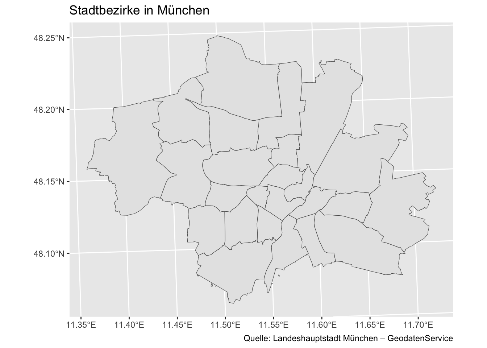
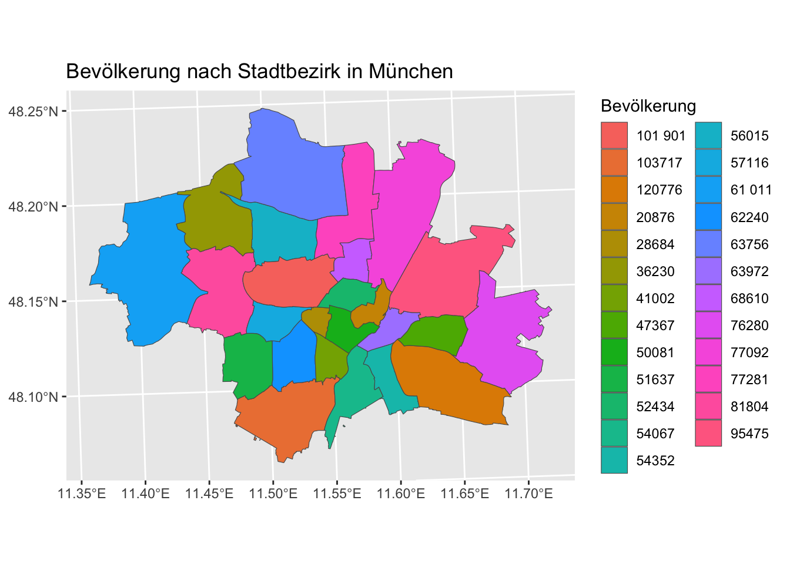
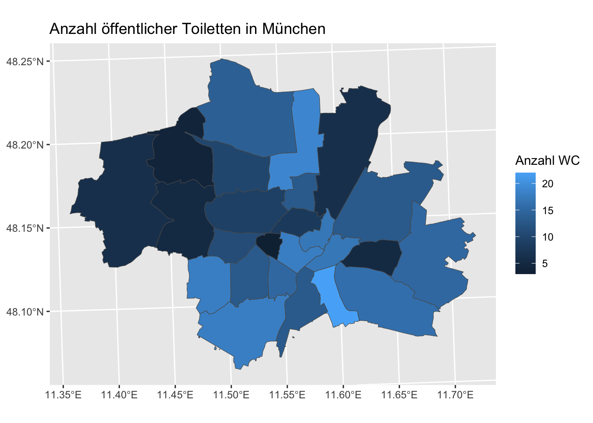
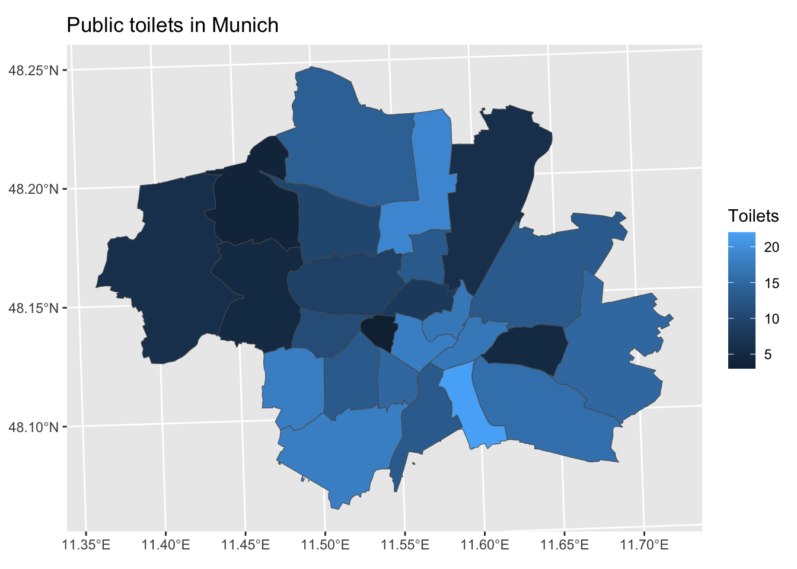
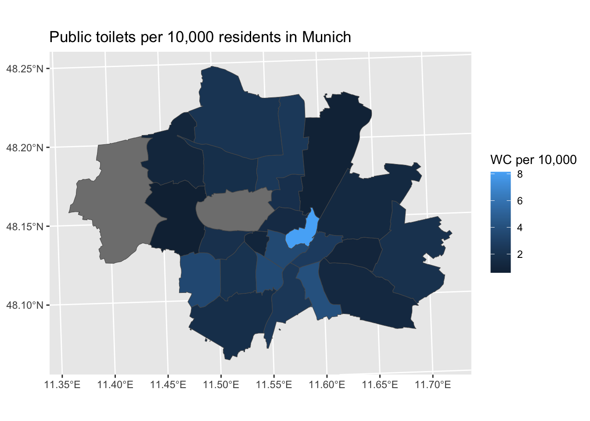
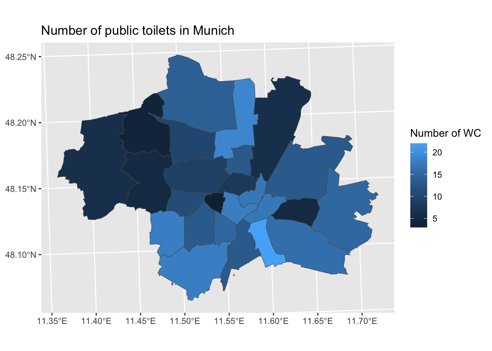

Rows: 27
Columns: 5
$ fid <chr> "vablock_stadtbezirk.1", "vablock_stadtbezirk.2", "vablock_…
$ sb_nummer <chr> "04", "19", "19", "15", "21", "02", "10", "23", "24", "18",…
$ sb_name <chr> "Schwabing-West", "Thalkirchen-Obersendling-Forstenried-Für…
$ flaeche_qm <dbl> 4363287, 17763490, 17763490, 22453922, 16497539, 4401651, 1…
$ shape <chr> "POLYGON ((691821.8368008411 5339259.124697947, 691767.2908…Untitled
Reading layer `OGRGeoJSON' from data source
`https://geoportal.muenchen.de/geoserver/gsm_wfs/ows?service=WFS&version=1.0.0&request=GetFeature&typeName=gsm_wfs:vablock_stadtbezirk&outputFormat=application/json'
using driver `GeoJSON'
Simple feature collection with 27 features and 4 fields
Geometry type: POLYGON
Dimension: XY
Bounding box: xmin: 675559.4 ymin: 5326194 xmax: 702569.8 ymax: 5346902
Projected CRS: ETRS89 / UTM zone 32N
[1] "stadtbezirksnummer" "stadtbezirk" "bevolkerung"
[4] "bevolkerung_in_prozent" "flache_in_ha" "flache_in_prozent"
[7] "einwohnerdichte" [1] "id" "sb_nummer" "sb_name" "flaeche_qm" "geometry" # A tibble: 6 × 7
stadtbezirksnummer stadtbezirk bevolkerung bevolkerung_in_prozent flache_in_ha
<dbl> <chr> <chr> <dbl> <dbl>
1 1 Altstadt -… 20876 1.3 315.
2 2 Ludwigsvor… 50081 3.1 440.
3 3 Maxvorstadt 52434 3.3 430.
4 4 Schwabing … 68610 4.3 436.
5 5 Au - Haidh… 63972 4 422
6 6 Sendling 41002 2.6 394.
# ℹ 2 more variables: flache_in_prozent <dbl>, einwohnerdichte <dbl>Simple feature collection with 6 features and 4 fields
Geometry type: POLYGON
Dimension: XY
Bounding box: xmin: 680906.8 ymin: 5326194 xmax: 702569.8 ymax: 5339295
Projected CRS: ETRS89 / UTM zone 32N
id sb_nummer
1 vablock_stadtbezirk.1 04
2 vablock_stadtbezirk.2 19
3 vablock_stadtbezirk.3 19
4 vablock_stadtbezirk.4 15
5 vablock_stadtbezirk.5 21
6 vablock_stadtbezirk.6 02
sb_name flaeche_qm
1 Schwabing-West 4363287
2 Thalkirchen-Obersendling-Forstenried-Fürstenried-Solln 17763490
3 Thalkirchen-Obersendling-Forstenried-Fürstenried-Solln 17763490
4 Trudering-Riem 22453922
5 Pasing-Obermenzing 16497539
6 Ludwigsvorstadt-Isarvorstadt 4401651
geometry
1 POLYGON ((691821.8 5339259,...
2 POLYGON ((685540.5 5327535,...
3 POLYGON ((689968.5 5331316,...
4 POLYGON ((698523.6 5337387,...
5 POLYGON ((682919.4 5338681,...
6 POLYGON ((689722.8 5335359,... [1] "id" "sb_nummer" "sb_name"
[4] "flaeche_qm" "stadtbezirk" "bevolkerung"
[7] "bevolkerung_in_prozent" "flache_in_ha" "flache_in_prozent"
[10] "einwohnerdichte" "geometry" 
[1] "FID" "name"
[3] "stadt" "plz"
[5] "strasse" "hausnr"
[7] "etage" "raumnummer"
[9] "oeffnungszeiten" "kategorie"
[11] "preis" "wickeln"
[13] "standort_beschreibung" "zustand"
[15] "einschraenkungen" "mail"
[17] "website" "telefon"
[19] "zustaendiges_referat" "erzeugt_bearbeitet"
[21] "din_18040_1" "toilette_fuer_alle"
[23] "eignung_blindenhunde" "eingangstuer_typ"
[25] "eingangstuer_glasmarkierung" "eingangstuer_klingel_taster"
[27] "eingangstuer_leichte_fuehrung" "eingangstuer_radar_schluessel"
[29] "eingangstuer_euro_schluessel" "eingangstuer_wendekreis"
[31] "eingangstuer_breite" "rampe"
[33] "rampe_steigung" "treppe_vorhanden"
[35] "treppe_antirutsch" "treppe_blindenschrift"
[37] "treppe_gelaender" "treppe_kontrast_visuell"
[39] "treppe_kontrast_taktil" "treppe_stufenanzahl"
[41] "treppe_stufenhoehe" "rollstuhllift"
[43] "eingangsbereich_beschreibung" "gebaeudeinneres_gangbreite"
[45] "gebaeudeinneres_induktionsschleifen" "gebaeudeinneres_fuehrungsrillen"
[47] "gebaeudeinneres_ruhig" "gebaeudeinneres_beleuchtet"
[49] "aufzug_vorhanden" "aufzug_tuerbreite"
[51] "aufzug_tiefe" "aufzug_breite"
[53] "wctuer_typ" "wctuer_glasmarkierung"
[55] "wctuer_klingel_taster" "wctuer_leichte_fuehrung"
[57] "wctuer_radar_schluessel" "wctuer_euro_schluessel"
[59] "wctuer_wendekreis" "wctuer_breite"
[61] "wctuer_bemerkung" "wc_badewanne"
[63] "wc_dusche" "wc_spiegel"
[65] "wc_gelaender" "wc_deckenlifter"
[67] "wc_standlifter" "wc_liege"
[69] "wc_spiegelhoehe" "wc_handtuchspenderhoehe"
[71] "wc_seifenspender_hoehe" "wc_waschbecken_oberkante"
[73] "wc_waschbecken_hoehe_unterfahrbar" "wc_waschbecken_tiefe_unterfahrbar"
[75] "wc_buegel_rechts" "wc_buegel_links"
[77] "wc_buegel_distanz" "wc_buegelhoehe"
[79] "wc_sitzhoehe" "wc_platz_davor"
[81] "wc_platz_rechts" "wc_platz_links"
[83] "wc_spuelknopf_hinten" "wc_spuelknopf_rechts"
[85] "wc_spuelknopf_links" "wc_spuelknopf_hoehe"
[87] "wc_position_notruf" "wc_hoehe_notruf"
[89] "wc_bermerkung" "foto"
[91] "shape" # A tibble: 6 × 91
FID name stadt plz strasse hausnr etage raumnummer oeffnungszeiten
<chr> <chr> <chr> <dbl> <chr> <chr> <chr> <chr> <chr>
1 wc_finder_o… Öffe… Münc… 80804 Brunne… <NA> EG 6002 (DSM… Durchgehend
2 wc_finder_o… Öffe… Münc… 80339 10m v.… <NA> EG 6003 (DSM… Durchgehend
3 wc_finder_o… Öffe… Münc… 80992 36m v.… <NA> EG 6004 (DSM… Durchgehend
4 wc_finder_o… Öffe… Münc… 81667 17m v.… <NA> EG 6005 (DSM… Durchgehend
5 wc_finder_o… Besu… Münc… 80637 Baldur… 28 EG <NA> Täglich währen…
6 wc_finder_o… Besu… Münc… 80637 Baldur… 28 EG <NA> Täglich währen…
# ℹ 82 more variables: kategorie <chr>, preis <dbl>, wickeln <dbl>,
# standort_beschreibung <chr>, zustand <chr>, einschraenkungen <chr>,
# mail <chr>, website <chr>, telefon <chr>, zustaendiges_referat <chr>,
# erzeugt_bearbeitet <chr>, din_18040_1 <dbl>, toilette_fuer_alle <dbl>,
# eignung_blindenhunde <dbl>, eingangstuer_typ <chr>,
# eingangstuer_glasmarkierung <dbl>, eingangstuer_klingel_taster <dbl>,
# eingangstuer_leichte_fuehrung <dbl>, eingangstuer_radar_schluessel <dbl>, …[1] "spec_tbl_df" "tbl_df" "tbl" "data.frame" [1] "POINT (690895.8300008213 5338610.019998008)"
[2] "POINT (688566.0000007733 5334578.0999981575)"
[3] "POINT (686327.1300007277 5339290.969998273)"
[4] "POINT (693678.1400008835 5333795.669997834)"
[5] "POINT (687776.6700007569 5338200.429998195)"
[6] "POINT (687779.0500007567 5338200.709998195)" [1] "FID" "name"
[3] "stadt" "plz"
[5] "strasse" "hausnr"
[7] "etage" "raumnummer"
[9] "oeffnungszeiten" "kategorie"
[11] "preis" "wickeln"
[13] "standort_beschreibung" "zustand"
[15] "einschraenkungen" "mail"
[17] "website" "telefon"
[19] "zustaendiges_referat" "erzeugt_bearbeitet"
[21] "din_18040_1" "toilette_fuer_alle"
[23] "eignung_blindenhunde" "eingangstuer_typ"
[25] "eingangstuer_glasmarkierung" "eingangstuer_klingel_taster"
[27] "eingangstuer_leichte_fuehrung" "eingangstuer_radar_schluessel"
[29] "eingangstuer_euro_schluessel" "eingangstuer_wendekreis"
[31] "eingangstuer_breite" "rampe"
[33] "rampe_steigung" "treppe_vorhanden"
[35] "treppe_antirutsch" "treppe_blindenschrift"
[37] "treppe_gelaender" "treppe_kontrast_visuell"
[39] "treppe_kontrast_taktil" "treppe_stufenanzahl"
[41] "treppe_stufenhoehe" "rollstuhllift"
[43] "eingangsbereich_beschreibung" "gebaeudeinneres_gangbreite"
[45] "gebaeudeinneres_induktionsschleifen" "gebaeudeinneres_fuehrungsrillen"
[47] "gebaeudeinneres_ruhig" "gebaeudeinneres_beleuchtet"
[49] "aufzug_vorhanden" "aufzug_tuerbreite"
[51] "aufzug_tiefe" "aufzug_breite"
[53] "wctuer_typ" "wctuer_glasmarkierung"
[55] "wctuer_klingel_taster" "wctuer_leichte_fuehrung"
[57] "wctuer_radar_schluessel" "wctuer_euro_schluessel"
[59] "wctuer_wendekreis" "wctuer_breite"
[61] "wctuer_bemerkung" "wc_badewanne"
[63] "wc_dusche" "wc_spiegel"
[65] "wc_gelaender" "wc_deckenlifter"
[67] "wc_standlifter" "wc_liege"
[69] "wc_spiegelhoehe" "wc_handtuchspenderhoehe"
[71] "wc_seifenspender_hoehe" "wc_waschbecken_oberkante"
[73] "wc_waschbecken_hoehe_unterfahrbar" "wc_waschbecken_tiefe_unterfahrbar"
[75] "wc_buegel_rechts" "wc_buegel_links"
[77] "wc_buegel_distanz" "wc_buegelhoehe"
[79] "wc_sitzhoehe" "wc_platz_davor"
[81] "wc_platz_rechts" "wc_platz_links"
[83] "wc_spuelknopf_hinten" "wc_spuelknopf_rechts"
[85] "wc_spuelknopf_links" "wc_spuelknopf_hoehe"
[87] "wc_position_notruf" "wc_hoehe_notruf"
[89] "wc_bermerkung" "foto"
[91] "shape" "id"
[93] "sb_nummer" "sb_name"
[95] "flaeche_qm" [1] "numeric"[1] "character" [1] "id" "sb_nummer.x" "sb_name"
[4] "flaeche_qm" "stadtbezirk" "bevolkerung"
[7] "bevolkerung_in_prozent" "flache_in_ha" "flache_in_prozent"
[10] "einwohnerdichte" "sb_nummer.y" "sb_nummer"
[13] "anzahl_wc" "geometry" "wc_pro_10000" sb_name bevolkerung anzahl_wc
1 Pasing-Obermenzing 81804 5
2 Schwabing-Freimann 77092 6
3 Schwanthalerhöhe 28684 3
4 Berg am Laim 47367 5
5 Allach-Untermenzing 36230 4
6 Ramersdorf-Perlach 120776 16
7 Bogenhausen 95475 13
8 Maxvorstadt 52434 8
9 Thalkirchen-Obersendling-Forstenried-Fürstenried-Solln 103717 18
10 Thalkirchen-Obersendling-Forstenried-Fürstenried-Solln 103717 18
11 Moosach 56015 10
12 Schwabing-West 68610 13
13 Laim 57116 11
14 Trudering-Riem 76280 15
15 Sendling-Westpark 62240 13
16 Feldmoching-Hasenbergl 63756 14
17 Untergiesing-Harlaching 54067 13
18 Untergiesing-Harlaching 54067 13
19 Milbertshofen-Am Hart 77281 19
20 Au-Haidhausen 63972 17
21 Hadern 51637 18
22 Ludwigsvorstadt-Isarvorstadt 50081 18
23 Sendling 41002 15
24 Obergiesing-Fasangarten 54352 22
25 Altstadt-Lehel 20876 17
26 Aubing-Lochhausen-Langwied NA 6
27 Neuhausen-Nymphenburg NA 9
wc_pro_10000
1 0.6112171
2 0.7782909
3 1.0458792
4 1.0555872
5 1.1040574
6 1.3247665
7 1.3616130
8 1.5257276
9 1.7354918
10 1.7354918
11 1.7852361
12 1.8947675
13 1.9259052
14 1.9664394
15 2.0886889
16 2.1958718
17 2.4044241
18 2.4044241
19 2.4585603
20 2.6574126
21 3.4858725
22 3.5941774
23 3.6583581
24 4.0476891
25 8.1433225
26 NA
27 NADiese Karte zeigt die Anzahl öffentlicher Toiletten pro 10.000 Einwohner*innen in den Münchner Stadtbezirken. Dadurch wird sichtbar, welche Stadtbezirke im Verhältnis zur Bevölkerungszahl besser oder schlechter versorgt sind.


id sb_nummer
1 vablock_stadtbezirk.20 1
2 vablock_stadtbezirk.16 17
3 vablock_stadtbezirk.15 6
4 vablock_stadtbezirk.6 2
5 vablock_stadtbezirk.23 20
6 vablock_stadtbezirk.17 5
7 vablock_stadtbezirk.26 11
8 vablock_stadtbezirk.10 18
9 vablock_stadtbezirk.11 18
10 vablock_stadtbezirk.9 24
11 vablock_stadtbezirk.12 7
12 vablock_stadtbezirk.4 15
13 vablock_stadtbezirk.19 25
14 vablock_stadtbezirk.1 4
15 vablock_stadtbezirk.7 10
16 vablock_stadtbezirk.2 19
17 vablock_stadtbezirk.3 19
18 vablock_stadtbezirk.14 3
19 vablock_stadtbezirk.24 13
20 vablock_stadtbezirk.18 16
21 vablock_stadtbezirk.8 23
22 vablock_stadtbezirk.21 14
23 vablock_stadtbezirk.13 8
24 vablock_stadtbezirk.27 12
25 vablock_stadtbezirk.5 21
26 vablock_stadtbezirk.22 22
27 vablock_stadtbezirk.25 9
sb_name flaeche_qm
1 Altstadt-Lehel 3145888
2 Obergiesing-Fasangarten 5720866
3 Sendling 3938932
4 Ludwigsvorstadt-Isarvorstadt 4401651
5 Hadern 9223789
6 Au-Haidhausen 4219983
7 Milbertshofen-Am Hart 13417212
8 Untergiesing-Harlaching 8057218
9 Untergiesing-Harlaching 8057218
10 Feldmoching-Hasenbergl 28938452
11 Sendling-Westpark 7814853
12 Trudering-Riem 22453922
13 Laim 5286015
14 Schwabing-West 4363287
15 Moosach 11093673
16 Thalkirchen-Obersendling-Forstenried-Fürstenried-Solln 17763490
17 Thalkirchen-Obersendling-Forstenried-Fürstenried-Solln 17763490
18 Maxvorstadt 4298192
19 Bogenhausen 23712962
20 Ramersdorf-Perlach 19897136
21 Allach-Untermenzing 15451185
22 Berg am Laim 6315331
23 Schwanthalerhöhe 2070313
24 Schwabing-Freimann 25674767
25 Pasing-Obermenzing 16497539
26 Aubing-Lochhausen-Langwied 34057322
27 Neuhausen-Nymphenburg 12914864
stadtbezirk bevolkerung
1 Altstadt - Lehel 20876
2 Obergiesing - Fasangarten 54352
3 Sendling 41002
4 Ludwigsvorstadt - Isarvorstadt 50081
5 Hadern 51637
6 Au - Haidhausen 63972
7 Milbertshofen - Am Hart 77281
8 Untergiesing - Harlaching 54067
9 Untergiesing - Harlaching 54067
10 Feldmoching - Hasenbergl 63756
11 Sendling - Westpark 62240
12 Trudering - Riem 76280
13 Laim 57116
14 Schwabing West 68610
15 Moosach 56015
16 Thalkirchen - Obersendling - Forstenried - Fürstenried - Solln 103717
17 Thalkirchen - Obersendling - Forstenried - Fürstenried - Solln 103717
18 Maxvorstadt 52434
19 Bogenhausen 95475
20 Ramersdorf - Perlach 120776
21 Allach - Untermenzing 36230
22 Berg am Laim 47367
23 Schwanthalerhöhe 28684
24 Schwabing - Freimann 77092
25 Pasing - Obermenzing 81804
26 Aubing - Lochhausen - Langwied NA
27 Neuhausen - Nymphenburg NA
einwohnerdichte anzahl_wc wc_pro_10000
1 66 17 8.1433225
2 95 22 4.0476891
3 104 15 3.6583581
4 114 18 3.5941774
5 56 18 3.4858725
6 152 17 2.6574126
7 58 19 2.4585603
8 67 13 2.4044241
9 67 13 2.4044241
10 22 14 2.1958718
11 80 13 2.0886889
12 34 15 1.9664394
13 108 11 1.9259052
14 157 13 1.8947675
15 50 10 1.7852361
16 58 18 1.7354918
17 58 18 1.7354918
18 122 8 1.5257276
19 40 13 1.3616130
20 61 16 1.3247665
21 23 4 1.1040574
22 75 5 1.0555872
23 139 3 1.0458792
24 30 6 0.7782909
25 50 5 0.6112171
26 18 6 NA
27 79 9 NA

sb_name bevolkerung anzahl_wc
1 Altstadt-Lehel 20876 17
2 Obergiesing-Fasangarten 54352 22
3 Sendling 41002 15
4 Ludwigsvorstadt-Isarvorstadt 50081 18
5 Hadern 51637 18
6 Au-Haidhausen 63972 17
7 Milbertshofen-Am Hart 77281 19
8 Untergiesing-Harlaching 54067 13
9 Untergiesing-Harlaching 54067 13
10 Feldmoching-Hasenbergl 63756 14
11 Sendling-Westpark 62240 13
12 Trudering-Riem 76280 15
13 Laim 57116 11
14 Schwabing-West 68610 13
15 Moosach 56015 10
16 Thalkirchen-Obersendling-Forstenried-Fürstenried-Solln 103717 18
17 Thalkirchen-Obersendling-Forstenried-Fürstenried-Solln 103717 18
18 Maxvorstadt 52434 8
19 Bogenhausen 95475 13
20 Ramersdorf-Perlach 120776 16
21 Allach-Untermenzing 36230 4
22 Berg am Laim 47367 5
23 Schwanthalerhöhe 28684 3
24 Schwabing-Freimann 77092 6
25 Pasing-Obermenzing 81804 5
26 Aubing-Lochhausen-Langwied NA 6
27 Neuhausen-Nymphenburg NA 9
wc_pro_10000
1 8.1433225
2 4.0476891
3 3.6583581
4 3.5941774
5 3.4858725
6 2.6574126
7 2.4585603
8 2.4044241
9 2.4044241
10 2.1958718
11 2.0886889
12 1.9664394
13 1.9259052
14 1.8947675
15 1.7852361
16 1.7354918
17 1.7354918
18 1.5257276
19 1.3616130
20 1.3247665
21 1.1040574
22 1.0555872
23 1.0458792
24 0.7782909
25 0.6112171
26 NA
27 NA